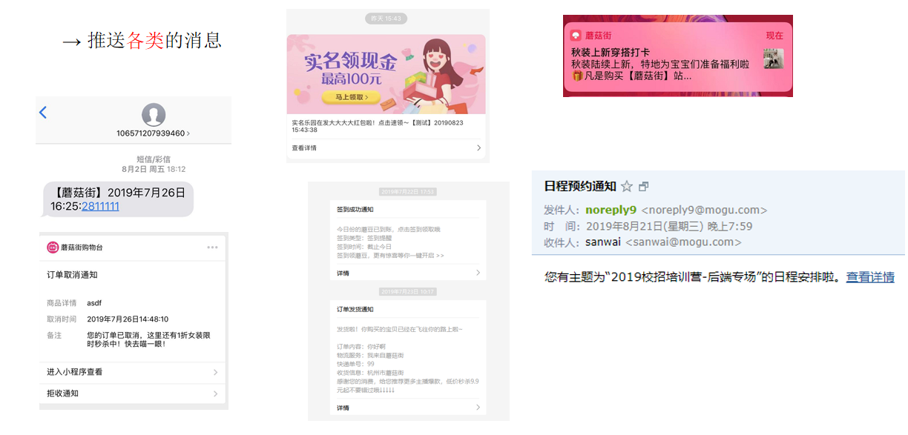
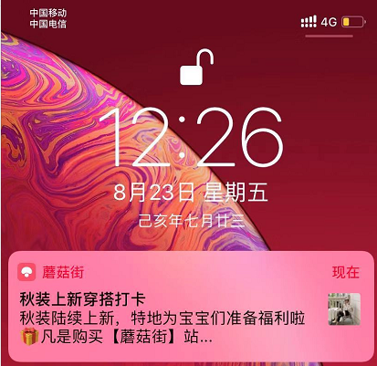
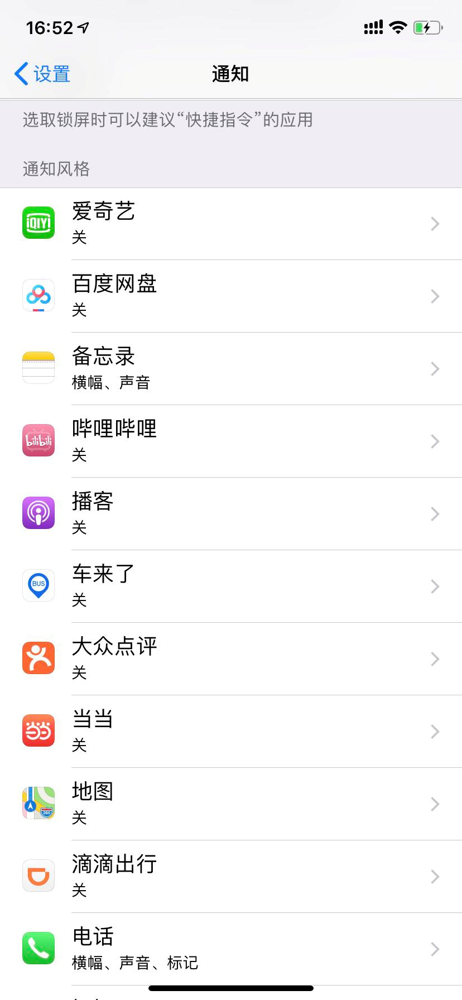
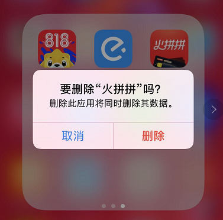
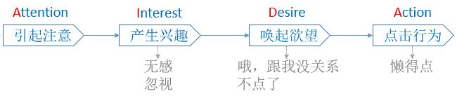
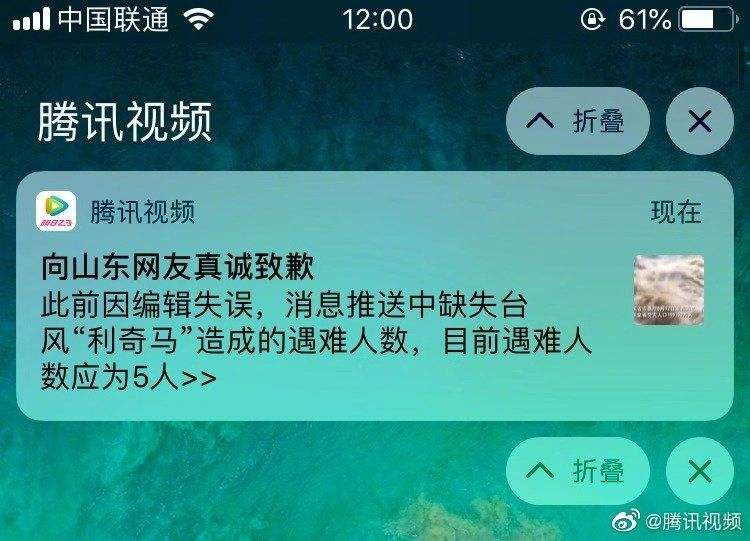

原文连接:https://www.cnblogs.com/Java3y/p/11452495.html
前言
只有光头才能变强。
文本已收录至我的GitHub仓库，欢迎Star：https://github.com/ZhongFuCheng3y/3y
如果有看我最近文章的同学可能就知道我在公司负责的是一个消息管理平台(推送系统)

而Push消息是这么多种类型之中非常重要和常用的一种类型，最近也希望针对Push推送做些新的尝试，于是去学习学习些Push消息运营的技巧。
这篇文章主要是记一些笔记，以及希望听听你们是怎么看待Push推送的(不妨在评论区留言)。
一、什么是Push消息？
Push消息是非常常见的，每个APP几乎都有此类的产品。举个例子：

二、Push消息能做什么？
一般我们认为Push消息能做以下的事情：
- 唤醒用户，提高用户的留存率，提高产品活跃度。我手机下载了蘑菇街，但我似乎把它已经忘记了(好久没用了)，如果此时这个APP给我推送一条我有兴趣的内容。我可能会继续用蘑菇街这个APP，甚至从此活跃起来（购买消费)
- 告诉用户我有新的产品上线了(带动功能模块使用率)。本来蘑菇街是做商城的，现在做起直播来了。但好多用户好像都不咋留意到，此时我推送一条直播的消息给用户，可能用户就爱起直播了。
Push消息能够在你手机闭屏时(即便你没有打开APP)，通过通知来给你推送信息，是一种能够直接触达用户的消息推送
- 相对短信而言：成本低、样式多样(支持标题/简介/图片)、链接跳转直接到APP
三、Push消息现状
不知道你们在手机上下载完APP会做啥事，反正我第一时间就把通知消息给禁用掉了(除了微信)。

之前试过忘了把高德地图的通知关掉，天天给我推送消息，想弄死高德地图的心都有了(haha)。
主要是现在每个人的手机容量都不少，装的APP少说都20个了。如果每个通知消息都打开，那得多烦人啊。有的APP一天还给你推个几条，本以为是重要的事，没想到是自己不感兴趣消息。一不开心，把APP给卸载了也是常见的操作了。

用户收到不感兴趣的推送可能会导致：
- 把通知消息给关闭了
- 把APP给卸载了
四、推送的内容
推送的内容又可以分为以下的几类：
- 系统功能类(消息提醒)：比如快递签收通知，发货通知，关注的主播开播(上新)啦
- 营销类（活动/优惠类）：比如某某时间开始大促，赶紧抢购
- 内容类：比如晓明哥经典语录，穿搭风格教程
- 资讯类：新闻、时事内容推送
针对上面所说的Push推送好处以及坏处，这就非常考验我们到底推送些什么内容给用户了
- 推的内容好：提高用户留存率、提高产品活跃度、提高用户对APP的粘度
- 推的内容差：用户对你的内容变得麻木、直接关闭通知消息、甚至卸载APP
那么一般我们会考虑些什么因素呢？有以下几个：
- 文案
- 推送时机
- 推送频率
- 推送的人群
4.1 文案
有一个叫做爱达法则（AUDA）公式：

文案就不用多说了，相信大家都听过UC标题，如果有一个好的文案内容那吸引用户点击的概率就更高一些。目前一般的推送会用一些小技巧去提高用户的
- 在文案末尾后加上引导话术：
“点我揭晓”、“→”、“>>” - 多多利用
数字：众多品牌3折起，更有10元的裤子，你还等什么？ - 增加emoji表情
- 结合热点：今天晓明哥又出新语录！
- 更强的关联性：比如除夕的时候，你微信收到N个祝福消息，但一看就是群发的，没啥意思。但此时，有个朋友给你发了条消息：“3y 春节快乐”。你就觉得有点温馨了，是不是！
- .....有待挖掘（欢迎评论交流)
4.2 推送的时机
如果是资讯类的，推送的时机显然是越早越好了（不然别人家的都推送完了，用户都知道了。你才推送，那谁还点进去啊）--- 同时作为是官方推送的，还应保持准确性

一般推送内容，我们都是希望在大家相对空闲的时间去推送，比如：
上班路上及早餐时间（9-10点）、午休（12-14点）、下班路上（6-7点）、睡前（21-22点）
不同的用户群体，时间可会有一定的调整。所以这就得寻找相对适宜的时间了。
3y正写着代码，正在烦躁着这个Bug怎么这么的无厘头时，此时一个Push推送过来：“你有一张代金券即将到期！”
4.3 推送的频率
9-10点给你推条：关注这些，你的Java水平一定能提高！
12-14点给你推条：三年大佬经验总结，买了就是赚到！
18-19点给你推条：耗时一个月整理的英语资源！一次性全部分享给你！
21-22点给你推条：价值1999的大数据资源，免费送给你！
那显然，你肯定会取关我，是不是。推送的频率要控制得当，一般来说一天用户不能收到3天以上的推送（消息多了，算是骚扰了），甚至不能每天都给用户推送（可能隔天推一次会好一些）。
4.4 推送的人群
现在互联网公司都有自己的用户画像系统，给同一类人推送合适的消息是较合适的。比如说：
- 有一批用户刚注册平台，给这批用户推送个优惠券，促进他的购买欲
- 有一批用户可能身高150+，给这批用户推荐些矮小的搭配风格推荐
- 有一批用户的地址位置在广州，给这批用户推荐一下：广州就该这么穿，你就是整条街最靓的仔！
- ...这儿可以跟文案关联起来，这样的推送会更加精准一些，用户可能会点击的概率会更高一些。
3y是一个学Java的，收到的通知消息却是：“Excel从入门到精通，只要30天！”(关键是我也没关注过Excel的内容)，那此类的推送如果多了，我很可能就把这个APP删了。
五、我们能做些什么？
我们可以做ABTest来尽可能提高点击率。
所谓 A/B 测试，简单来说，就是为同一个目标制定两个方案（比如两个页面），让一部分用户使用 A 方案，另一部分用户使用 B 方案，记录下用户的使用情况，看哪个方案更符合设计目标。
比如，我们现在要推送的人群为100W人，我可以这么做：
- 在12点30分将文案A推10W人
- 在12点30分将文案B推10W人
- 在12点30分将文案C推10W人
- 在12点30分将文案D推10W人
- 30分钟后，观察上面的指标，哪个文案受欢迎，1点钟将剩余的流量（60W）推送那个文案
文案这么多，这不是要累死运营了？文案能不能自动生成，推送的人群能不能更精准，推送的时机能不能更恰当？.....
想更加了解AbTest？参考资料：
- https://blog.oldj.net/tag/a-b%e6%b5%8b%e8%af%95/](https://blog.oldj.net/tag/a-b%e6%b5%8b%e8%af%95/)
- https://www.jianshu.com/p/33ef663f9b0b
- https://www.infoq.cn/article/BuP18dsaPyAg-hflDxPf
- https://yangwenbo.com/articles/abtest-traffic-diversion.html
- https://www.jianshu.com/p/de8d9f0b14f4
- https://liyaoli.com/2018-04-29/about-ab-test-and-gated-launch.html
最后
希望这篇文章可以让大家大致了解一下什么是Push推送~
乐于输出干货的Java技术公众号：Java3y。公众号内有200多篇原创技术文章、海量视频资源、精美脑图，关注即可获取！

觉得我的文章写得不错，点赞！